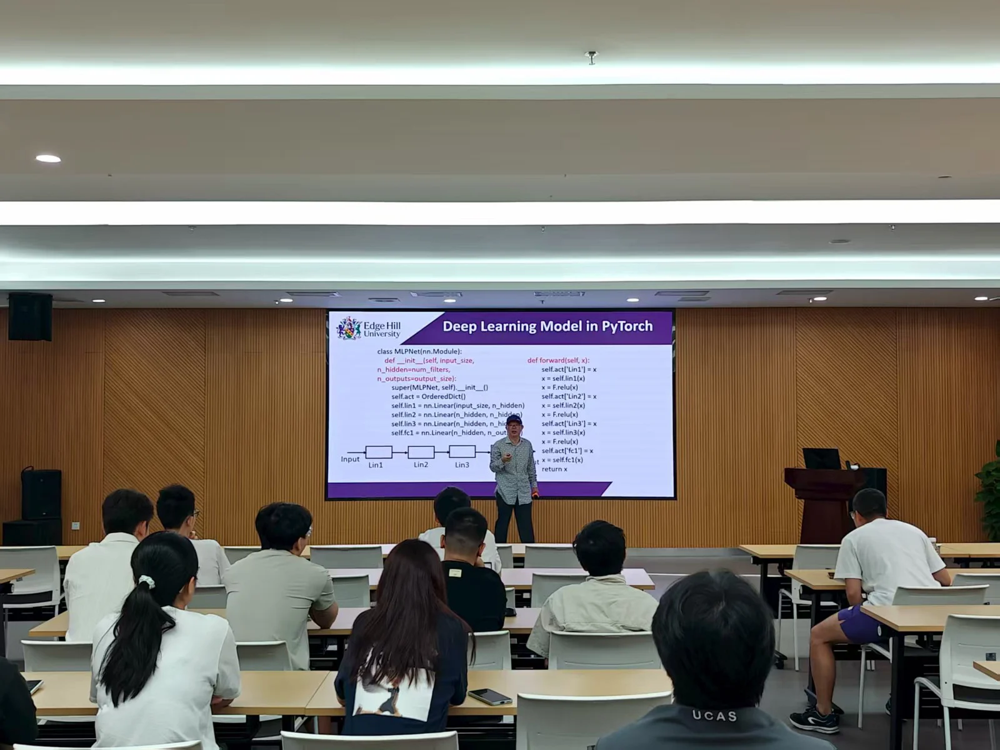
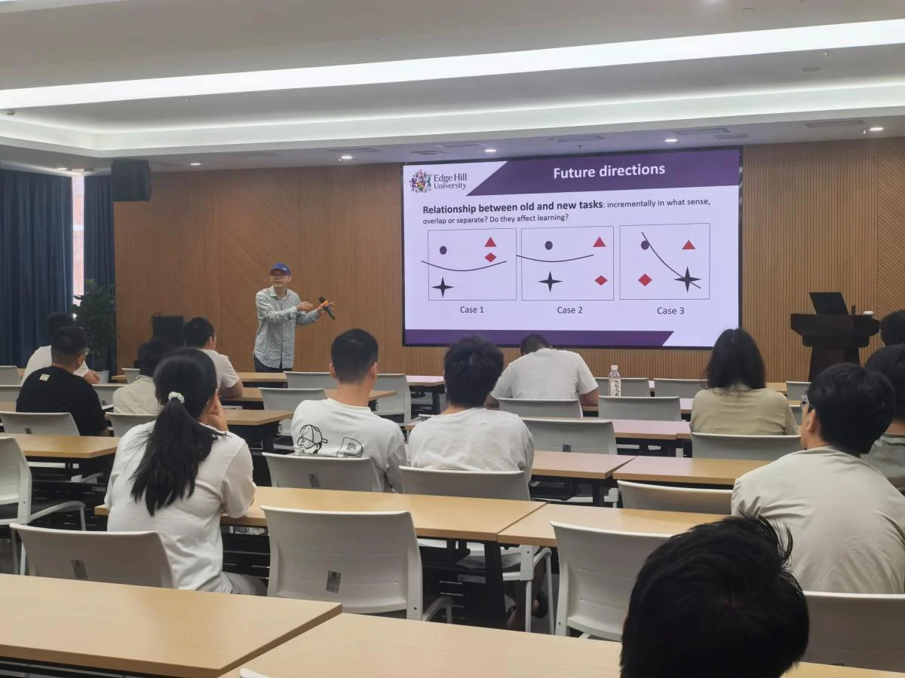
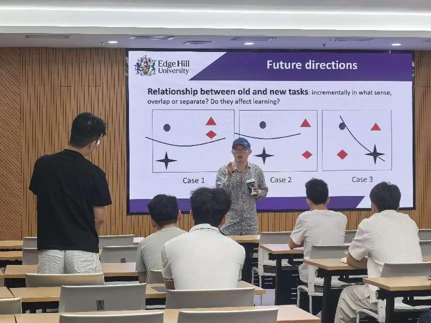

2025年9月8日，中国科学院宁波材料所智能医学影像团队举办了以“增量学习（Incremental Learning）”为主题的系统性学术讲座。主讲人刘永怀博士是英国边山大学视觉计算实验室教授兼主任。他目前是许多国际期刊和会议论文集的区域/副编辑或编辑委员会成员，也是许多国际期刊的客座编辑，包括《国际计算机视觉杂志》等。他曾担任90多个国际会议和期刊的项目委员会委员和裁判，获得了许多国际奖项，如最佳编辑，以及该领域顶级国际会议的最佳审稿人。

增量学习允许智能体随着数据不断涌入而不断学习，更新其知识，从而模仿人类和动物的固有行为。本次报告将首先对增量学习进行定义和分类，然后概述和评估一些关键思想和方法，并将结果制成表格并进行可视化。此外，还将讨论如何探索增量学习的一些关键问题和未来方向。最后，报告将总结一些观察和推测。

本次讲座不仅面向增量学习、持续学习、终身学习与多任务学习等专业领域的研究者，也希望为更广泛的机器学习/深度学习社区提供方法论启发。报告强调，应将“深刻的问题分析与严谨的任务公式化”融入通用深度学习模型的设计与落地实践，具体涉及数据与知识的表示与管理、模型开发与在线更新、模型压缩、结果可视化、系统集成以及复杂现象模拟等方面，助力构建面向真实世界应用的可持续演进学习系统。
讲座尾声，现场交流环节气氛热烈，同学们围绕增量学习的定义边界、灾难性遗忘的缓解策略、评测指标与可视化方案、以及在资源受限设备上的高效更新等问题踊跃提问并展开讨论；刘永怀老师耐心细致地逐一回应，从理论动机、算法取舍到工程实现给出具体建议，结合团队实践分享了数据管理与记忆回放的实施经验与常见误区，现场不时爆发掌声，互动效果良好。
